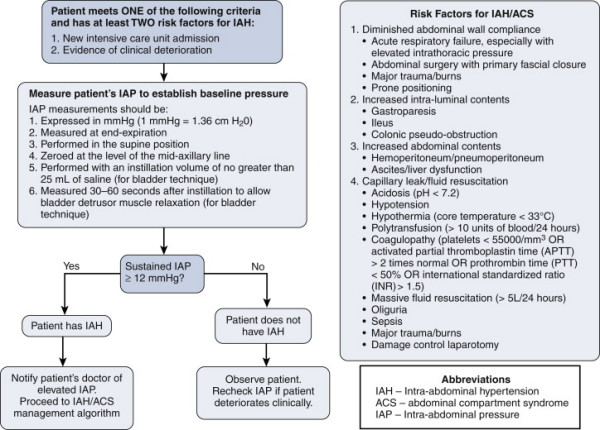
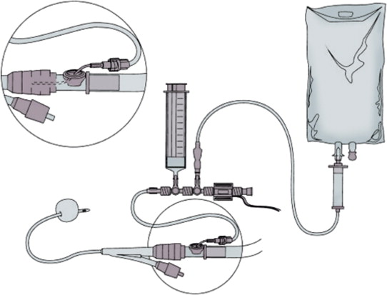
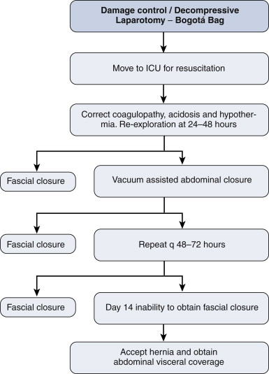

1.
Abdominal Compartment Syndrome
2. Laparostomy and the Abdomen that Will Not Close
3. Management of the Open Abdomen
Indications
ACS and IAP
OA Consequences
Temporary Closure
Timing of Return to OT
Permanent Closure
Indications
If the abdomen cannot be closed or closed safely.
If a closed abdomen is judged unsafe.
Eg:
Abdo Trauma
Massive oedema to intestine & mesentery
- both from insult and necessary fluid resuscitation.
Damage Control Laparotomy
Where the triad of acidosis, hypothermia, coagulopathy, laparotomy
may be terminated.
- pack the abdo, leave open.
- reschedule a look in 1-2d.
Secondary Peritonitis
Delayed diagnosis & perforation, ischaemic necrosis, anastomotic
dehiscence, pancreatitis are typical situations.
Post-op Wound Dehiscence
- or abdo wall defect.
Abdo Compartment
Syndrome
(ACS) & Intra-Abdo Pressure (IAP)
Normal range is up to 5mmHg.
Intra-abdominal hypertension = >12 mmHg
Deleterious effects on heart, lung, kidneys, lungs and gut as low as
15 mm Hg
Abdominal comparment syndrome (ACS) = >20 mmHg with associated
new organ dysfunction
Epidemic in the 1990s; now
declining with judicious appropriate fluid management in trauma
and other critical illness.
Characteristics of ACS
A hypoxic, acidotic patient despite high peak airway pressures,
renal dysfunction, decreased cardiac output and a tense abdomen.
- immediately improved by abdo decompression.
ACS comes on incrementally.
- new evidence suggests IAP of 20mmHg (leads to resp, cardiac, renal
and visceral abnormality).
--> fluids and inotropes may help avert ACS in this group.
Decompression may be accompanied by lethal reperfusion injury if
severe.
Note that a patient with an open abdomen may develop ACS
- typically in the pack & run trauma laparotomy with ongoing
bleeding.
Risk Fx
Abdo trauma, AAA rupture, severe pancreatitis, septic shock, severe
SIRS of other causes.
Bowel swelling, third spacing, hypoalbuminaemia with extracellular
fluid sequestration, contained haemorrhage.
>5L fluid per day or massive transfusion (>10u blood in 6h)
Acuteness of onset plays a role in how the abdomen can adjust to the
change in pressure.
- thus there is no specific 'level' at which ACS occurs or becomes
treatment-critical.
- and these pts often have organ dysfx for other reasons making
treatment decisions difficult.
Grading
Grade I : 12-15 mm Hg
Grade II : 16-20 mm Hg
Grade III : 21-25 mm Hg
Grade IV : >25 mmHg
- recommended that grades 3 & 4 be decompressed.
When should IAP be measured?
When abdo distension with massive trauma, multiple transfusions and
abdominal packing.
More subtly, when increasing organ dysfunction in context of a tense
distended abdo and threat of ACS.
- impaired oxygenation
- cardiac failure (impaired venous return)
- oliguric renal failure
- GI ischaemia (decreased splanchic perfusion)
Diagnosis

Measurement

Abdominal examination is unreliable
At-risk pts need measurement using a system e.g. the above.
- ie a pressure transducer inserted via urinary catheter to bladder
and zeroed etc as usual
- 25mL sterile saline into empty bladder, recording at midaxillary
line
Management
Pts with pressures >20 who need ongoing fluid loading at the
highest risk.
Medical Therapies
- improve abdominal wall compliance (sedation / anaesthesia);
body positioning, muscular blocking
- evacaute intra-abdominal contents: NG decompression, rectal
enemas, prokinetics
- perc drain any abdo fluid collections
- correct +ve fluid balance; diuretics, restriction, dialysis.
Rational for Opening.
1. Expansion of peritoneal space.
2. Allows orderly egress of fluids.
3. Facilitates subsequent laparotomy.
4. Minimising chances of intra-abdo sepsis.
It should be used out of necessity, ie only when IAH and ACS
and clinical scenario dictate.
Abdominal closure should be performed as soon as possible when
medical management failure and organ compromise.
- ventral hernia and fistula are main risks, and should not be
incurred lightly.
Who gets an open abdomen in damage control surgery?
1. Patients with or at risk of IAH or ACS
2. Patients undergoing damage control surgery
3. Cannot close fascia
4. Nec fasc of abdo wall
5. 2nd look.
Damage control laparostomy; what next?
48h return to OT
- in meantime, correct physiology and achieve diuresis.
If still unable to close, return 48-72h later and perform sequential
closure or VAC (see below).
- with sequential closure; freshen abdomen, lyse simple adhesions,
clean
- then oppose upper and lower limits as possible; then VAC
- then repeat and repeat until closed.
- until D14: still no closure? Accept inevitible hernia and achieve
visceral coverage
--> risk benefit at this time is resource intensiveness, fistula
risk.
--> can simply close skin with vertical mattress 2.0 over
abdominal contents. Or bridge with a biological mesh (maybe better;
can also VAC over top if skin doesn't meet); or SSG.

Component separation is not recommended in the acute setting
Biological meshes good but avoid them in heavily infected fields or
the mesh disintegrates.
Long-term management otherwise as for massive abdo hernia.
Consequences of an Open Abdomen
(OA)
Inflammatory
Response
Inevitable profound local and variable systemic response.
Activation of neutrophils, macrophages and inflammatory cascade;
SIRS
Activation of coagulation, cytokine and other inflammatory cascades
in first 48hrs leads to massive fluid loss.
- this continues at a slower rate later.
The underlying pathology has a compound effect with the open
abdomen.
- if there is ongoing pancreatitis, peritonitis, for example, the
systemic response will be severe.
Coagulum / Adhesion formation
After 48hrs, fibrin forms in the exudate.
- a gelatinous mass holds the intestine and omentum loosely
together.
Polymerisation of the fibrin follows and collagen is laid down
during next 4-5 days.
- by day 10, abdomen is essentially sealed by vascular, organising
granulation.
- initially by fibrin deposition and collagenisation.
- subsequently fibrinolysis predominates and laparotomy may not be
possible after this for at least 6 weeks and possibly longer, until
this process is complete.
Notes
1. Maturing adhesions are laying down increasing fibrin and collagen
from first week.
- however this will not provide sufficient strength to the wound to
allow cough impulse.
- a cough may cause unsupported abdomen in the first 3 weeks to
rupture the fragile coagulum and eviscerate.
- serosal tears and fistulas may result.
2. Adhesion maturation fixes omentum and intestine to edges of
abdominal wound.
- beyond d10, any attempt to dissect bowel away from the perterior
aspect of the wound edges may result in multiple enterotomies and
fistulas.
- delayed closure past d10 of an OA will be difficult unless
specific interventions undertaken.
Secondary Peritonitis
Another risk of open abdomen.
Fistula
Catastrophe. Mortality rates 30-50%.
May result from underlying pathology (eg leaky anastomosis)
- or from the OA (eg ill-advised dissection, or serosal tears at
coughing / changing dressings).
Arising on a mobile portion of bowel, it may rise to the surface,
where mucosa may be seen.
- organising granulation of the wound edge adheres and eventually it
will unite at the edges of the abdominal wound.
- a retroperitoneal fistula to duodenum / pancreas will form a
granulation-lined tract to meet abdo wound edges.
When associated with distal obstruction, maignancy, Crohn's,
radiation, or when mucosa fixed to surface, spontaneous closure will
not occur.
- up to 75% of other fistulas may heal (likely after weeks of
nutritional and nursing care).
If a fistula is present after 10d in an OA, a long period of
supportive treatment is inevitable before repair of fistula &
closure possible.
Wound Edges
Wound retraction will progress during the first week, particularly
if visceral oedema is pronounced.
- this may enhance the evisceration, with bowel loops widely outside
the confines of the abdominal wall.
- if persisting, the bowel may lose its 'right to abode' and a large
hernia becomes inevitable.
- high risk of serosal tear and fistula.
As rapidly as possible, eventration should be achieved: the abdomen,
though open, contains its contents.
By week 2, granulation will occlude the OA surface, uniting the
edges tenuously.
- progression over weeks and months forms a scar, which contracts
much smaller than the original OA.
- this would take 3-6 months if an open abdomen is left to its own
devices.
- initially a hernia may not be visible due to scar density; later
scar thins and softens and a hernia will become apparent.
The option of skin grafting a granulating OA wound is controversial.
- speeds up healing, deals with metabolic / nutritional
complications, tidy and dressing-free.
- but reduces contraction and collagen, leading to earlier larger
herniae in the long-run.
Breathing and Coughing
The OA wall needs several weeks before it will be strong enough to
cough and breath normally.
- mostly surgeons intervene prior by closing the abdomen / using
prosthetic mesh.
The use of a VAC can provide effective support.
Renal function
Often these patients require large fluid volumes to maintain renal
perfusion.
A proportion is sequestered intra-abdominally.
- intestinal oedema, mestery, retroperitoneum, abdominal wall oedema
all result.
- waterlogged gut and mesentery tend to protrude through the OA, and
steps must be taken to deal with this.
- compartment syndrome may be anticipated if laxity not given.
Intensive Care Dynamics
Communication is essential.
Important decisions include:
i) temporary abdominal closure
ii) timing of return to theatre
iii) permanent abdominal closure
Temporary Abdominal Closure
Principles
1. Encompass viscera; allow swelling while tamponading bleeding
if reqd.
2. Contain fluid, prevents fluid loss; must seal / stick.
3. Prevent anterior adhesions.
4. Quick
5. Allows subsequent closure.
Components
Fenestrated inner layer
- AVOID direct suction on bowel or may get fistula
Middle layer of foam or towels
Suction mechanism to middle layer
Outer airtight seal.
Mesh
Provide abdominal support and allow respiratory rehabilitaiton to
proceed.
Porosity is important
- should alow ongoing egress of exudate while maintaining abdominal
support.
1. Polypropylene
- should not be allowed to remain in contact with serosal surfaces
>7d, as beyond this, enterotomies are almost inevitable.
- maintains strength but IAH may recur as it does not expand well.
- healing without hernia but overshadowed by high rates of fistula
and sepsis.
2. Polyglactin
- maintains strength for 10-14d before fragmenting; can be peeled
off within 2 weeks.
- cannot expand, so ACS possible, may rip at suture lines.
- significant hernia rate, fistula rate 8%.
3. Woven polyglycolic acid
- maintains integrity <21d, embeds at 10-12d, granulation grows
through.
- moderate fistula risk, high incidence of large herniae.
- has large interstices: low risk of ACS.
Bogota Bag
Sterile plastic bag opened and sutured to skin / fascia.
Easily available and simple to apply.
Initial measure, but deals poorly with fluid loss from the OA, does
not contribute to abdominal support.
Vacuum-Assisted Closure
Subatmospheric pressure helps in healing wounds.
And controlled staged abdominal repair becomes possible.
An inert foil is placed over viscera, with esay access to wound
edges for delayed primary repair.
Technique
1. Arrange omentum over viscera.
2. Cut a large bowel bag in a large sheet
- have an assistant hold it taught perform multiple punctures with a
scalpel.
3. Place sheet over omentum and viscera.
- tuck it as far laterally as possible, 10cm or more.
4. Place 2 abdo packs over the polyethylene.
5. Place two Jackson-Pratt drains on the packs (one each side of
wound).
6. Two further packs on top.
7. Carefully try abdo and place a large ioban / opsite stretched
over wound under tension.
8. Return to ICU, connect drains to wall suction between
100-150mmHg.
- a Y connection can allow a single suction outlet.
- the wound will concave in, and fluid will flow.
Leave the Vac in place 3-5d, renew as necessary.
Dressings can be renewed in a general ward.
Laparotomy is easy, and the VAC can be easily replaced.
Advantages of the VAC
Easy, cheap, good ongoing care.
Low fistula rate cf mesh.
Allows delayed primary closure for up to 4 weeks.
Minimises chances of IAH.
Don't put them near a vascular repair.
- and safety near an anastomosis is unclear.
KCI ABThera
Similar but all within the supplied kit and connected to
VAC setup
ABx?
No evidence for a role beyond the first 24h
Outcomes
Primary closure rate is 70-80%
Mean closure time 6-10d
Complications are fistula (5%), abscess (5%), delayed SBO (5%)
Timing of Return to OT
1. Mandated in damage control laparotomy.
2. Increasingly, the rest can be managed in ICU (dressing changes,
minor debridements etc).
3. Return to theatre for major procedures, such as bowel resection,
stoma, major debridement or tracheostomy.
Ettapenlavage
A concept of mandated daily formal laparotomy, debridement and
cleansing in severe intra-abdominal infections until closure judged
possible.
Good initial results.
But onerous, and associated with bleeding and fistulas.
Prefer a less intensive approach.
Permanent Abdo Closure
Staged repair / Sequential Closure
(STAR = staged abominal repair)
Visceral swelling and retraction of wound edges are
opposing forces to closure.
Delayed closure is a relatively new idea.
- evolved to minimise complex secondary reconstruction.
Ideally OA should be closed by edge-to-edge fascial apposition
within 7-10 days.
- a velcro fastener progressively tightened was pioneered initially.
VAC, with negative pressure assisting wound approximation is
preferable.
- allows DPC of OA wounds for up to 4 weeks.
- the inert plastic foil is essential as it provides safe access to
wound edges indefinitely.
Tension suture systems have been successfully employed
- tension closure generally to be avoided, but strong benefit in
primary closure.
- risk of fascial necrosis minimised if tension applied
incrementally & sequentially.
If closure remains impossible, continuing VAC for a minimum of 6
weeks is advised, before abdominal reconstruction contemplated.
- don't skin graft a granulating OA; a rapidly growing symptomatic
hernia would be expected.
Delayed secondary closure
Long standing OA leads to ventral hernia.
If safe and accessible, repair fistulas first.
Then deal with the defect.
- easier if left to collagenise and scar than if grafted.
Fistula does complicated 25% of OA patients.
- if declared early, a window of opportunity to resect / stoma is
afforded.
- more usually it appears in a granulating abdomen, meaning 6 weeks
delay for definite treatment if it remains patent.
- easier to manage if a VAC, with daily dressings as required.
The hostility of the abdomen in a pt with ongoing intra-abdominal
trouble may be predicted by the open wall.
- an oedematous, indurated, warm, blanching, non-mobile wall spells
trouble.
- defer fistula resection and abdo reconstruction until these signs
have passed.
Prognosis
High mortality associated with underlying pathology.
20-40%.
Resolution and good judgement are required.
Talk to the family regularly, they may be horrified.